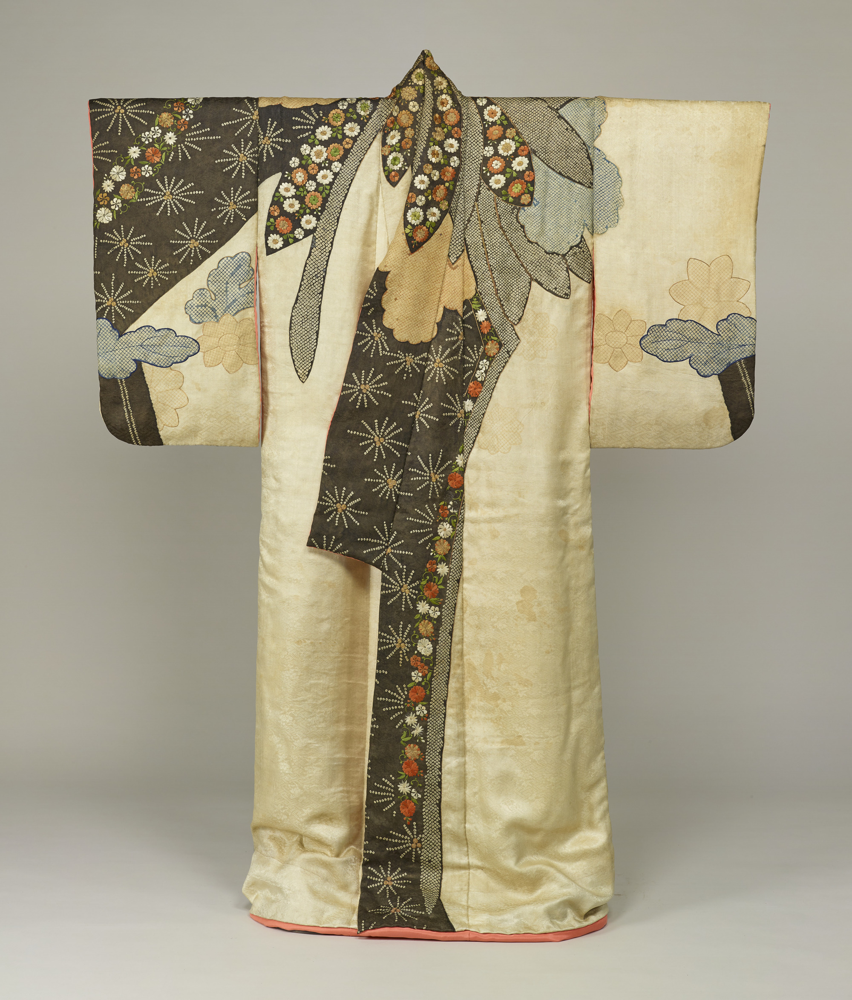
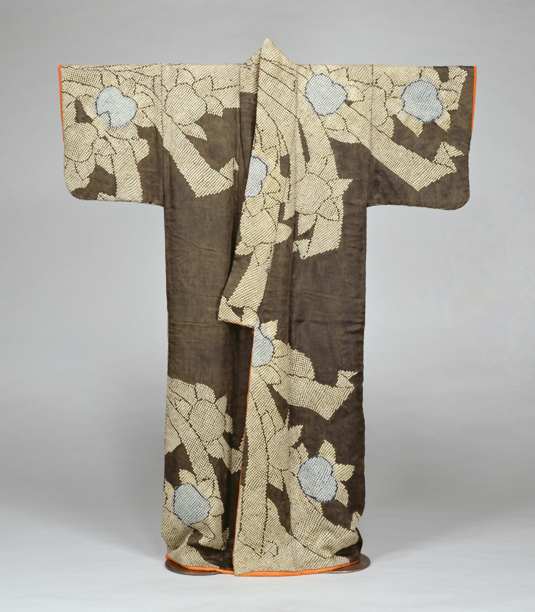
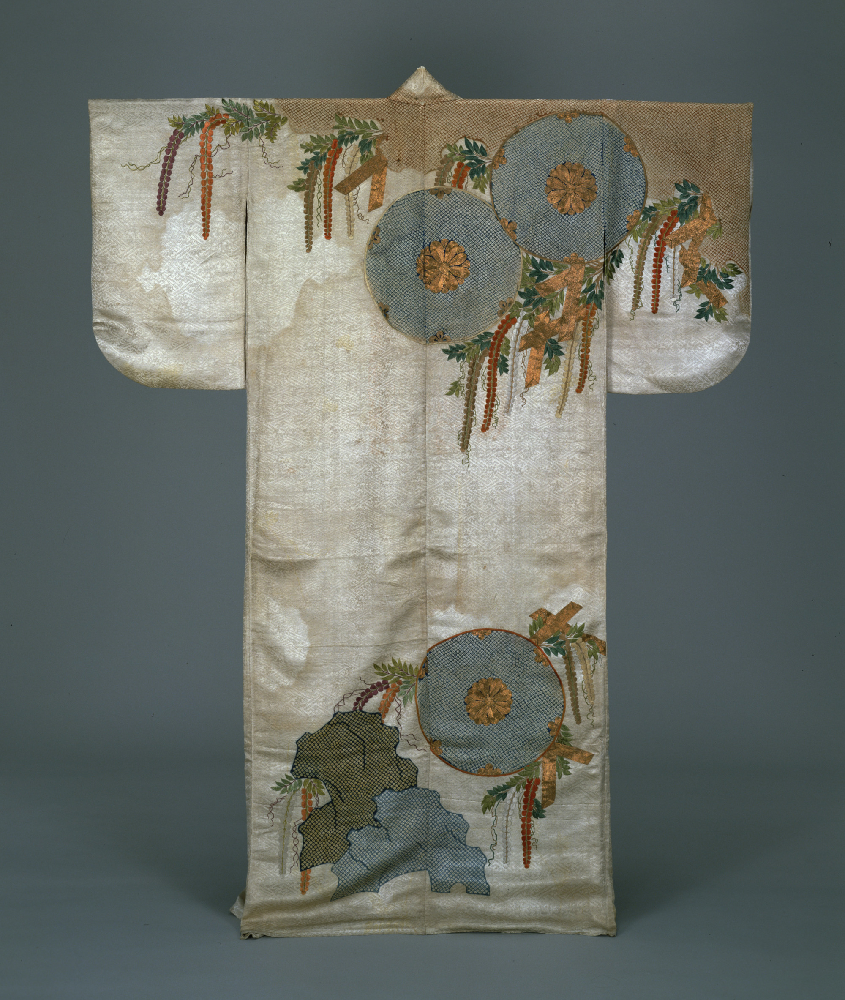
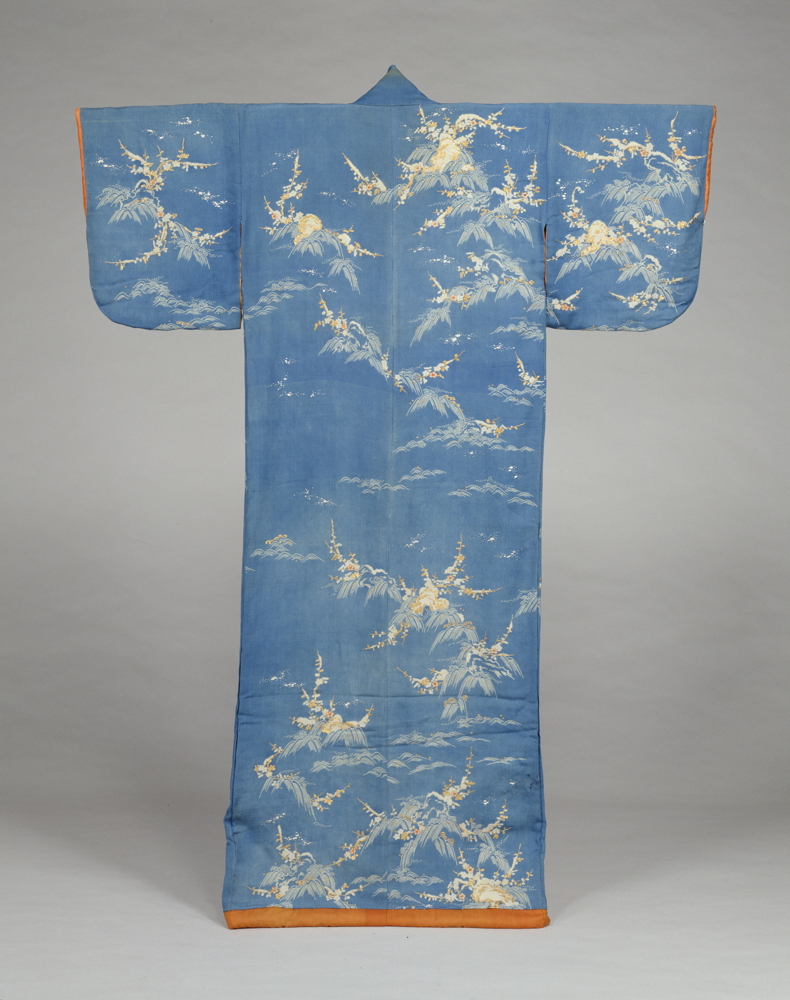
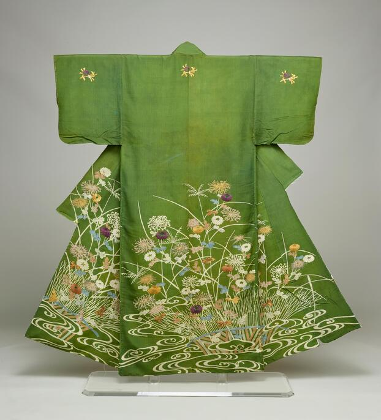
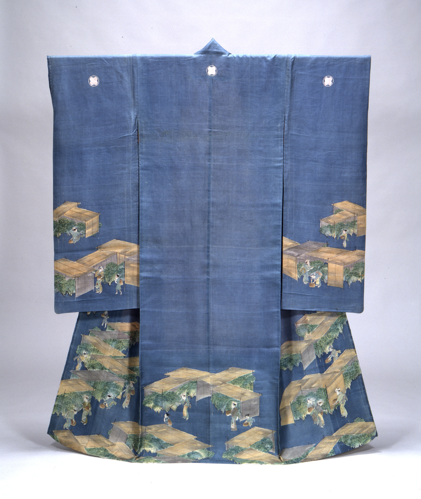
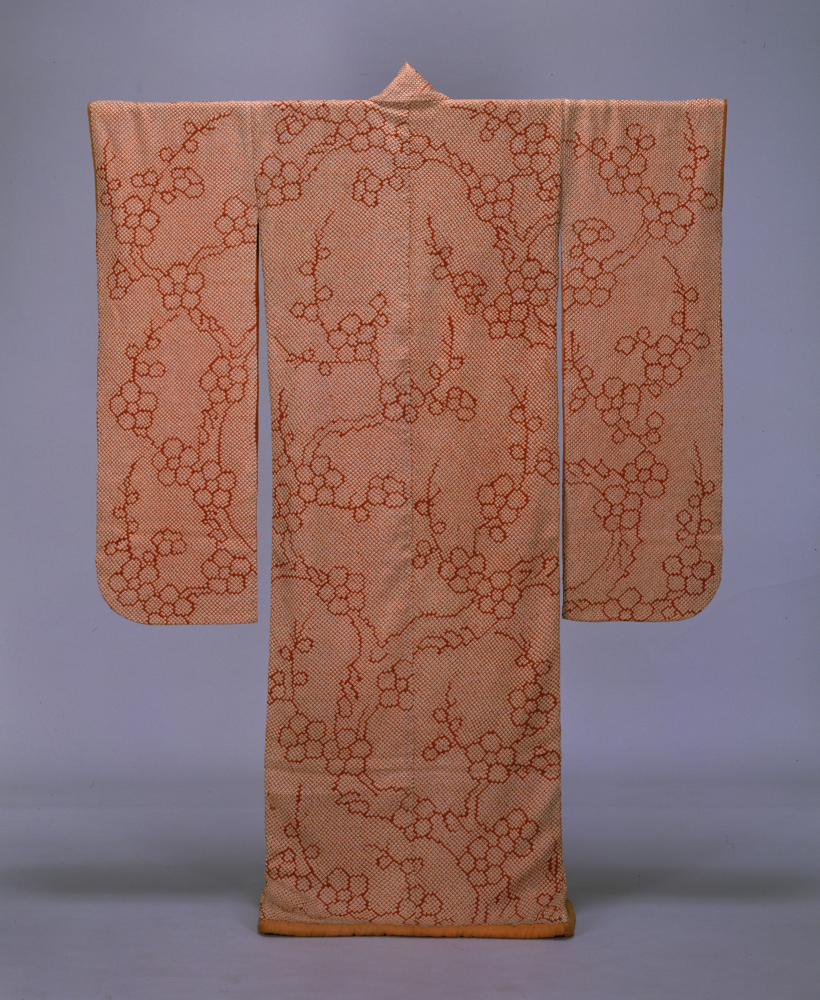
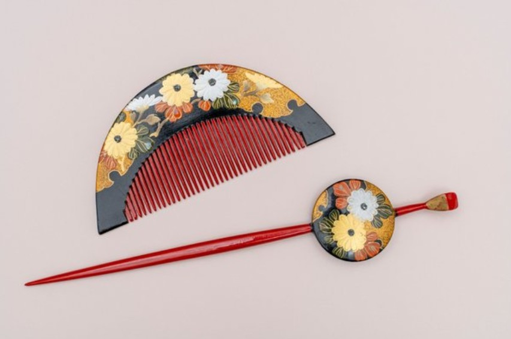

圖案花紋：白綸子地大菊
典藏者：東京國立博物館
這是一件肩部有大朵菊花圖案的振袖。振袖是一種未婚女性穿著的長袖和服。這件振袖在袖子自上往下約三分之二處設計了橫向的花葉圖案。以此為界，下方三分之一部分接續了另外一種面料。或許這原本並非一件振袖，只是經過重新加工以便未婚女性穿著吧。肩部的的菊花交替採用了刺繡和紮染工藝來表現。黑底部分有紅白小花圖案以及放射狀圖案的刺繡。這種圖案表示落葉松的松葉。呈放射狀發散的松葉中間的三個圓形或許是花蕊吧。 像這種右半身呈弧形圖案的靈動設計尤其是在寬文時期的市井女性之間頗為流行，被稱為「寬文小袖」。這一時期，城鎮居民有著很強的經濟實力，流行服飾中開始出現城鎮居民偏好的影子，取代了此前一直引領潮流的武家文化。最終誕生了這種大膽的設計。江戶時代初期的時尚設計雜誌《禦雛形》中也可見到的款式。

圖案花紋：黑紅綸子地橘熨斗
典藏者：東京國立博物館
小袖是現代和服的原型。這一名稱最初是和服袖口開口較窄的意思，這件和服應該是城市工商業階層的女性參加正式場合時所穿的禮服。這些心形的圖案其實是一些橘子。橘子樹即便在寒冬也是枝葉繁茂、鬱鬱蔥蔥，因此被認為是青春永恆的象徵。小袖上那些大大的曲線形緞帶狀的圖案在日本被稱為「熨斗」紋。「熨斗」指禮品袋上的禮簽。在古代，人們在贈送禮品時，通常會附帶一條薄薄的幹鮑魚條，用來作為長壽的象徵。之後經抽象化後被設計成了現在的「熨斗」紋。這兩者都是非常吉祥的圖案。 和服的底色看上去略帶茶色，但實際上卻是將紅色面料染成黑色後製成的。這種顏色被稱為「黑紅色」，是江戶時代初期的流行色。仔細觀察還會發現，橘與「熨斗」圖案都由很多小小的圓形顆粒組成的。每一個圓形顆粒都是以線將面料一圈圈纏繞打結後染色製成，這種工藝叫做「鹿子紮染」。因為這些無數個小斑點看上去好似小鹿毛皮上的斑點，因此得名。每一粒圓形顆粒均由手工製成，可想而知這是一項十分浩大的工程。「鹿子紮染」與金線和縫箔一起，並稱三大奢侈工藝，在當時的社會上被禁止使用。但您眼前這件小袖卻大面積地使用「鹿子紮染」工藝，實在是奢華至極。

白色緞紋提花地鼓與藤花圖案， 以鹿子絞染表現鼓皮、岩石等，其周圍則以金線和絲線的刺繡表現藤花下垂的圖案。 應是從流行自由大胆設計的寬文期（1661-1673）向偏好優雅設計的元祿期（1688-1704）過渡時期的作品。

圖案花紋：縹色縮緬地岩波梅
典藏者：東京國立博物館
深色的底子上，用防染留白的技法表現出飄逸瀟灑的白色紋樣，這種裝飾法流行於江戶時代中期。

圖案花紋：縐綢地菊花芒草籬笆流水
典藏者：東京國立博物館
江戶時代中期的小袖和服。上方的背與兩袖上，飾有三處由「抱藤紋」與「禮簽束帶紋」組合而成的刺繡「伊達紋」。腰部下方的圖案傾向於正德年間的和服裝設計書籍圖案。以友禪染技法與辮子表現了「光琳水」流水圖案與盡顯琳派風格的秋草圖案。五處紋路的辮子「伊達紋」是由「抱藤紋」與「禮簽束帶紋」組合而成的。

圖案花紋：縹色羽二重地採茶風景
典藏者：東京國立博物館
江戶時代後期，城市女性間開始將藍、灰、茶色等樸素的顏色作為高雅、瀟灑的色調加以喜愛。

圖案花紋：紅綸子地梅樹圖案
典藏者：東京國立博物館
如這件作品般袖長一米多的振袖和服，流行於江戶時代後期。

江戶時代是庶民在經濟和社會地位上逐漸增強，並且町人文化迅速繁榮的時期。在這個時代，曾經只能穿著粗糙材質和有限色彩的庶民們，也開始為了享受時尚而巧妙地加以設計創新。其中，女性特別喜愛的配飾包括不受身份限制的梳子和簪子等小物件。